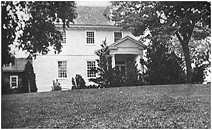

7
RICHARD SMOOT2
AND
HIS DESCENDANTSRichard Smoot, son of William, was born perhaps on the other side and was brought to America by his parent at an early age. His father transported him to Maryland in 1646 which would seem to indicate that he were a minor at that time.
The fact that a warrant on September 26, 1673, was issued to him for 200 acres of land, 100 acres of which was due for "time of service of himself and wife Elizabeth performed in the Province" has become a subject of much controversy. It is sometime thought that he left the Province, perhaps to Virginia where he married, and was returned to Maryland as an indenture by an enterpriser. This is highly possible, but the more logical conclusion is that he, wishing to reach perfection in a trade, apprenticed himself to a local artisan in the Province, an act which usually took the legal procedure of an indenture. While serving his period of apprenticeship, he married a redemptioner and consequently he was entitled to her land at the completion of her services. The other 100 acres of land to which he was entitled in 1673, were from assignment of Thomas Notley, due the latter for the transporting of John Reed and Robert Collingswood.
Children of Richard and Elizabeth Smoot
1. Richard Smoot married Margaret ----. q.v.
2. Edward Smoot married Lydia Newman. q.v.
3. Elizabeth Smoot, born Dec. 15, 1666.
4. William Smoot, apparently died young.
5. Eleanor Smoot married Humphrey, son of Humphrey and Margarey (Cage) Warren.Richard Smoot established his seat on the tract known as "The Hills" in Pickawaxon Hundred, where he eventually became the proprietor of one of the largest landed estates in the hundred. About 1650 he received from his father 200 acres of land adjoining the estate of Francis Pope on the Wicomico River, which he later conveyed to his neighbor Giles Thompkinson. In 1656 he assigned a portion of "Attwickes' Purchase" on the Wicomico, which had been patented by his father, to Thomas Mitchell who later conveyed to Humphrey Attwickes. The latter in 1662 sold to Thomas Peircy, at which time the transfer was acknowledged by his wife Elizabeth Attwickes. This tract in 1676 became the
8
subject of a suit in chancery, with Bridget Legatt, widow of John Legatt, as the defendant. In 1667 Richard Smoot patented "Free Booty" of 50 acres lying on the west side of the Wicomico near the land of Thomas Smoot. In 1674 he received a warrant for "Smoot's Purchase" of 100 acres in St. Mary's County.
At the lawsuit emanating from the estate of Captain William Batten in 1671/2, Richard Smoot served on the jury.
The will of Richard Smoot was dated April 23, 1676, and admitted to probate in Charles County on October 31, 1676, by Henry Henley and William Browne, with "brothers William Barton and Robert Rowland" as the overseers. He bequeathed to his eldest son, Richard, the dwelling plantation at the age of 21 years, and Edward an 100-acre portion of "Smoot's Purchase" at majority. The residue of his estate was to be divided among his five named children--Richard, Edward, Elizabeth, William, and Eleanor.
At the court held in Charles County during January 1676/77, Elizabeth Smoot "by the consent of Captain William Barton one of the overseers of the estate of Richard Smoot late of Charles County deceased" was placed under the guardianship of Elizabeth wife of Henry Bonner "till she arrives at the age of 16 years or marriage and said Elizabeth Bonner to learn the orphan to read and write and not to work without the house". At the same court Edward Smoot chose Thomas Taylor, and Richard Smoot that of Walter Davis.
On January 20, 1677, Walter Davis of Charles County, the greatest creditor of Richard Smoot, appeared in court and declared that the overseers "would not to further intermeddle with goods". Furthermore, he stated that Richard Smoot, the eldest son, was then of age sufficient to select his own guardian and that he had chosen him. The judge ordered that the goods and chattels of Richard Smoot be transferred to Walter Davis.
The inventory of the personal estate of Richard Smoot Sr. was appraised by John Cage and George Creducle on May 15, 1677, with William Barton Jr., as the executor.
The following letter of the same date to Walter Davis was signed by Philip Calvert: "I understand that William Barton Jr. hath intermeddled with goods of Richard Smoot and not fit to administer. He brought an inventory which I ordered to be recorded ... The orphans are under your care now and I desire you to look after them".
On July 18, 1677, Captain Humphrey Warren in court exhibited the bond of Walter Davis, the administrator of Richard Smoot Sr., deceased, with John Hater and Robert Inglesby as the sureties.
9
Richard Smoot3
(1663 - 1734)
Richard Smoot, son of Richard and Elizabeth Smoot, was born about 1663 in Pickawaxon Hundred, Charles County, Maryland. By the will of his father in 1677, he was bequeathed, as the eldest son, the dwelling plantation "The Hills", but somehow this tract of 240 acres subsequently became the property and seat of Captain Humphrey Warren II. In 1711 Richard Smoot with James Walker was bondsman for his sister Eleanor Warren, the administratrix of Humphrey Warren III.
It is assumed that he was the Richard Smoot who settled in Prince Georges County, where he died intestate in 1734. Letters of administration were issued to his widow, Margaret Smoot, with John Harris and Leonard Marbury as her bondsmen. It is believed that he married late in life and that no children were born to the union.
Edward Smoot3
(16-- - 1707)
Edward Smoot, son of Richard and Elizabeth Smoot, was born probably at "The Hills" in Pickawaxon Hundred, Charles County. In November 1681, he with a number of others received from His Lordship's Treasury 110 pounds of tobacco for "acts of public service", which is believed for his participation in one of the early Indian campaigns.
He married Lydia, daughter of George and Lydia (Ashcomb) Newman, but then the widow of John Gee, late of St. Mary's County. Records show that on February 25, 1684, the administration of the estate of John Gee was granted to Edward Smoot who "marryed the widow of the said deceased".
Children of Edward and Lydia (Newman) Smoot
1. John Smoot married Posthuma Ford. q.v.
2. Lydia Smoot married ---- Bean. Her estate was administered 1721 by John Smoot. William Howard and William Deerego were sureties.
3. Edward Smoot, born June 20, 1693. q.v.
4. Elizabeth Smoot, born June 20, 1693.
5. Eleanor Smoot.On April 5, 1689, Edward Smoot purchased from his kinsman William Smoot a portion of "Wicomico Fields", lying on the west side of the Wicomico River, where he established his seat which for over a century remained the traditional home of his descendants.
10
Edward Smoot died intestate. Letters of administration were issued on July 15, 1707, to Gerard O'Cane who had married the widow. His personal estate was appraised on August 16, 1707, by William Maddox and Richard Morris. John Loftus was surety for the administrator.
At a subsequent rent roll, 200 acres of "Wicomico Fields" were possessed by Gerard O'Cane and his wife Lydia, 100 acres by John Warren, and 200 acres by Colonel Contee.
By her third husband, Lydia Gee-Newman-O'Cane had at least two children--Gerard II and Judith. Gerard O'Cane Sr. died intestate in 1713, when his step-son John Smoot was appointed administrator by the court. John Wilder and Edward Ford offered bond. Within a short time his widow died, thereupon her son John Smoot was named administrator. In this instance John Wilder and William Derregoe were his bondsmen.
An administration account shows that John Smoot while administrating on the estate of Gerard O'Cane accounted for the money due from the deceased (Gerard O'Cane) as the administrator of Edward Smoot as well as disbursements to Eleanor Smoot daughter of Edward deceased, to Judith O'Cane daughter of the deceased, and to James O'Cane "his son". From the peculiar wording of the account, one would conclude that James was a son by a previous marriage, yet no statement proves this fact.
John Smoot in 1720 when he rendered an account on the estate of his mother made the following statement ... "whereof he could render a specific inventory and that he believes if any such there were that they by mistake were appraised among the estate of Gerard O'Cane, her deceased husband, who died but a small space before her".
At this time Gerard O'Cane, the minor orphan, had been removed from the guardianship of his half-brother and placed under his fullblood sister Judith Dutton. The latter by that date had married Matthew Dutton, of Charles County. Matthew Dutton died in 1734, naming in his will his widow Judith, and sons Notley, Thomas, and Gerard, and an unborn child. His widow on February 27, 1734, leased "Popleton" lying in Charles County to Leonard Smoot. She by 1737 had married secondly John Penn.
John Smoot4
(1686 - 1728)
John Smoot, son of Edward and Lydia (Newman) Smoot, was born November 2, 1686, in Pickawaxon Hundred, Charles County. He married Posthuma, born July 29, 1693, the daughter of Edward and Elizabeth (Allanson) Ford, of Chingoemuxon. On August 7, 1721,
11
John Smoot and Posthuma his wife conveyed to John Sanders for 7,500 pounds of tobacco a portion of "Christian Temple Manor" which had been willed Posthuma by her father and whereon Richard Coombs lately dwelt. The manor "Christian Temple" had been surveyed in 1659 for Thomas Allanson. A complete list of the children of John Smoot and Posthuma his wife has not been proved.
Children of John and Posthuma (Ford) Smoot
1. Edward Smoot married twice. q.v.
2. John Smoot married twice. q.v.
3. Eleanor Smoot.
4. Posthuma Smoot, spinster. Estate administered by Edward Smoot, 1772.
In 1717 John Smoot was bondsman for Frances Lofton when she administrated on the estate of her husband John Lofton. He also was bondman for William Derregoe when he administrated on the estate of John Derregoe in 1719, for Matthew Wardeen in 1722 when he administrated on Robert Cull's estate, and he with Matthew Dutton was bondsman for Katherine Edwards when she administrated for Thomas Wakefield.
John Smoot maintained his seat at "Wicomico Fields" where he died intestate during November 1727/8. The inventory of his personal estate was taken in April 1728, with James Smith and Lydia Smoot signing as the kinsmen. Mark Penn and Alexander Hanna were the greatest creditors. At this date the widow had married John Groves who, as administrator, certified to the inventory, stating that his wife, Posthuma Groves, relict and administratrix of John Smoot' deceased, was "not capable of riding at Present". Mark Penn and William Hawton were the bondsmen for the administrators. At a subsequent rent roll of Charles County, John Groves held a portion of "Wicomico Fields" for the orphans of John Smoot.
Posthuma Smoot-Groves outlived her second husband and rendered an account on his estate in April 1750. She showed a disbursement to John Smoot "being a part of his father's estate". The Groves representatives besides the widow were William Groves, aged 17 years, and Mary Groves, aged 16 years.1
William Groves Jr. made a noncupative will during 1757 in the presence of Edward Smoot and Abel Wakefield, willing his sister Mary
________________
1 She married first George Thomas by whom she had Tyre, John, Mary, and Philip, and secondly Philip Jenkins by whom she had Posthuma Eleanor.
12
Groves his entire estate except a negro which was to be sold for the benefit of his mother. Posthuma, the widow of John Smoot and John Groves, died in Charles County during 1771.
Edward Smoot4
(1693 - 17--)Edward Smoot, son of Edward and Lydia (Newman) Smoot, was born June 20, 1693, in William and Mary Parish, Charles County, Maryland. He migrated to Northumberland County, Virginia, and settled in St. Stephen's Parish, where the births of his children are recorded. The name of his wife is not given. No further record of Edward Smoot has been found.
Children of Edward Smoot
1. Winifred Smoot, born July 18, 1724.
2. Anne Smoot, born Oct. 13, 1726.
3. Thomas Smoot, born July 9, 1729. q.v.
4. Sarah Anne Smoot, born June 4, 1732.
Edward Smoot, Gent.5
(1724 - 1795)Edward Smoot, son of John and Posthuma (Ford) Smoot, was born at "Wicomico Fields", Charles County, Maryland. On February 22, 1762, in defining the boundary of his plantation he gave his age as 38 years, therefore, placing his birth about the year 1724. He married first Miss Chandler, according to a notation made in the Bible of his grandson. Furthermore, a son of this marriage noted in his family Bible that he was the child of Edward and Anne Smoot. From these references, we consequently learn that his first wife was Anne Chandler. The Smoots and the Chandlers were neighbors and friends and therefore it was natural that a marriage between the two families would materialize.
John Chandler was domiciled in Port Tobacco Hundred early in the seventeen hundreds, though he married Anne Penn, sister to Mark Penn, whose ancestral home was in Pickawaxon Hundred. The will of John Chandler, proved in 1735, named his sons, John, William, Stephen, and daughters, Sarah Hamill, Anne Chandler, and Mary Chandler. John and Stephen settled on the Wicomico. Subsequently Stephen Chandler sued Edward Smoot for possession of land in St. Mary's County. Although the lawsuit failed to show the cause for legal action, it is concluded that in some manner Edward Smoot through his wife was holding land previously belonging to the Chandlers.
13
Children of Edward and Anne (Chandler) Smoot
1. John Smoot married Elizabeth Douglas. q.v.
2. Edward Smoot married Rosannah Hodson. q.v.
3. Lydia Smoot married Clement Kennedy.
4. William Groves Smoot. q.v.
5. Henry Smoot married Elizabeth Warren. q.v.
6. Mary Smoot married Nov. 16, 1790, Jessie Tull.
In 1758 John Chandler was bondsman for Edward Smoot when he administered the estate of John Carver, likewise, Stephen Chandler was his bondsman in 1777 when he administered the estate of Boles Tyre Balthrope. John Hamill, son of John and Sarah (Chandler) Hamill, by his will of February 21, 1760, named his godson William Groves Smoot and his (testator) uncles John Chandler and Stephen Chandler.
By 1767 Edward Smoot had become a widower and had taken as his second wife Mary Magdaline, daughter of Benjamin and Sabina (Donaldson) Stoddert, of St. Mary's County.
Children of Edward and Mary (Stoddert) Smoot
7. Alexander Stoddert Smoot. q.v.
8. Jannet Smoot married Thomas Douglas.
9. Benjamin Stoddert Smoot. q.v.
Edward Smoot added to his estate from time to time both by patent and by purchase. In 1755 he received a warrant, which was issued under the name of "Wilder's Mistake", for an unclaimed tract of land amounting to 66 1/2 acres between his plantation and that of John Wilder. In 1764 he patented "Sukey" of 22 acres, and in 1765 "Smoot's Trifle" of 3 3/4 acres.
In 1764 Edward Smoot purchased from William Mitchell, of Prince William County, Virginia, 153 acres of land lying in that county, the tract being a portion of 300 acres bought by Luke Cannon from Thomas Young, conveyed to Young by George Pemberton and conveyed to him by Charles Sneed to whom the land had descended by inheritance.
On March 16, 1767, Edward Smoot, Merchant, and Mary Magdaline his wife deeded to James Tippen, of Frederick County, Innholder, 76 acres of land, being one-third of the dwelling-plantation of Benjamin Stoddert called "Friendship" originally granted to Colonel Thomas Addison and James Stoddert, and inherited by Edward and Mary Magdaline Smoot.
14
In 1770 Edward Smoot purchased from Philip Ludwell Lee 1,300 acres of "Rehoboth", portion of an original tract of 2,300 acres lying on the eastern side of the northwest fork of the Nanticoke River in Dorchester County. The original patent was in the name of John Lee, of Virginia, but later passed to his brother Richard Lee.
The tax list of 1783 recorded him as a resident of William and Mary Parish, stating that his seat "Wicomico Fields" had a "beautiful location on the Wicomico River". His other taxable realty in that year were "Wilder's Mistake", "Bullen" on the Potomac of 25 acres, "Bole's Purchase" of 483 acres on the Potomac, and 50 acres of "Harrison's Adventure".
Edward Smoot was a communicant of the Parish Church, still standing at Wayside, and shared a pew with Anne Smoot, according to the assignment of 1752. Although his wife at this period was Anne, it was not accustomed in that day to assign pews in the name of a wife. Consequently, she was probably a maiden sister or a near kinswoman.
Edward Smoot took the Oath of Allegiance and Fidelity to the State of Maryland during 1778. Record exists, however, of his having been summoned by a commission of Charles County on the suspicion of maintaining a correspondence with the enemy. The charge was dismissed December 23, 1777, after he had given bond for his appearance at the next county court.
On June 14, 1785, he deeded to his son Edward Smoot for love and natural affections a portion of "Rehoboth", lying at the mouth of Batchelor Creek. Mary Magdaline Smoot, his wife, waived her dower. At one time he was a magistrate of Charles County.
The will of Edward Smoot was dated October 2, 1794, and proved in Charles County on February 24, 1795, by J. Harris, Sarah Marshall, and Henley Adams, with the widow and son Alexander Stoddert Smoot as the executors.
He confirmed the gifts, both real and personal, made to his deceased son Edward and his heirs. To his son William Groves Smoot, he devised personalty and confirmed the gifts already given him. To his grandson Thomas, son of William Groves Smoot, he bequeathed several tracts of land on which the latter was domiciled, with William Groves the privilege of residing upon the land during life.
Henry was willed a portion of "Rehoboth" lying in Dorchester County. To the heirs of his son John, he devised one guinea and confirmed the gifts already bequeathed.
15
Alexander received after the death of his mother all land purchased from Levy Chum, Philip Key, and Edward Gardner, being a portion of "Wicomico Fields", providing he paid Philip Key #&0163;75, the agreed price. Alexander also received 375 acres of "Indian Landing", lying on the southwest side of the northwest fork of the Nanticoke River, in Dorchester County.
Benjamin Stoddert Smoot was bequeathed the dwelling-plantation, being a portion of "Wicomico Fields", and two tracts purchased from Joseph Scrogen known as "Harrison's Adventure" and "Scrogen's Grove", a tract adjoining called "Wilder's Mistake", and the water mill.
Daughters, Lydia Kennedy and Jannet Smoot, received certain articles and one-half of the personal estate, the other half to be enjoyed by his widow during life, then to his two sons--Alexander and Benjamin. His granddaughters, Mary Smoot of Henry and Catherine Kennedy, were each devised a negro. In the event that his daughter Mary was living at the time of his death, she was to have #&0163;5 and the confirmation of gifts already bequeathed.
His executors were to sell "Lucky" and the proceeds were to be divided between his two grandchildren--Elizabeth Smoot of William and Elizabeth Kennedy of Clement--when they came of age. His wife, whom he named as executrix with his son Alexander, died before the probation of the will, inasmuch as on February 24, 1795, the court records refer to "Alexander S. Smoot as the surviving executor". The inventory of the personal effects was taken on June 14, 1796, with Benjamin S. Smoot and William G. Smoot as the next of kin.
Court records show that Alexander Stoddert Smoot was made the guardian of his brother and sister--Janet and Benjamin Stoddert. Citation was issued at the court of 1797-1799 to Alexander Smoot, executor of Edward Smoot, to show why he had failed to render a final account on the estate.
John Smoot5
(1726 - 1795)John Smoot, son of John and Posthuma (Ford) Smoot, was born about 1726 in William and Mary Parish, Charles County. He married twice. The identity of his first wife remains in doubt, but his second wife was Anne, daughter of Charles Allison Ford, to whom he was married on April 8, 1779, by the Rev. John McPherson of William and Mary Parish. Her father died in Charles County during 1784 and named his son-in-law John Smoot, daughter Anne Smoot, and grandchildren Samuel and Mary Smoot.
16
Children of John Smoot
1. Mary Anne Smoot married May 27, 1779, John Brown Wilder.
2. Horatio Smoot married thrice. q.v.
3. Elizabeth Smoot.
4. John Smoot married Elizabeth Grant. q.v.
5. Charles Smoot. q.v.
6. David Smoot.
7. Eleanor Smoot married Apr. 6, 1782, Paul Minitree.
8. Samuel Smoot.
9. Mary Smoot, died young.
Being a younger son, John Smoot failed to share in the realty holdings of his deceased father. In 1750, presumably shortly after he obtained majority, he was devised his share of the personal estate by his mother. He established his seat in Trinity Parish where the marriages of his two daughters are recorded in the register. In 1766 he patented "Rogue's Harbor" of 3 1/4 acres and two years later he received a warrant for "Good Luck" to be surveyed into 44 acres. At the first census he was presumably the John Smoot Sr. who was the head of a family with 2 males over 16 years of age, 4 males under 16 years, 4 females, and 11 slaves. He died intestate in Charles County. The court named his widow Anne Smoot, the administratrix, while Neale H. Shaw and John E. Ford offered bond. The inventory of his personal estate was taken on September 24, 1795, and appraised at #&0163;336/14/6. Horatio Smoot and John B. Wilder signed as next of kin. The proceeds were distributed in 1806 among the widow, the seven surviving children, and Eleanor Minitree (granddaughter) daughter of Eleanor Minitree, deceased. In 1800 his widow Anne Smoot was the head of a family in William and Mary Parish, Charles County, with two males between the ages of 16 and 26, one female between the same ages, herself over 45, and 20 slaves. She was not the head of a family at the next census.
Thomas Smoot5
(1729 - 1757)Thomas Smoot, son of Edward, was born July 9, 1729, in St. Stephen's Parish, Northumberland County, Virginia. He married Sarah, the daughter of Anne Alexander. The latter in her will proved in Northumberland County during 1757 devised her plantation to her son Ewell Alexander during life then to her grandson Thomas Smoot and his male heirs, and for want of heirs to her daughters Winifred Walker, Anne White, Sarah Smoot, and Mary Townsend. To her
17
daughter Sarah Smoot, she willed the "chest that was formerly her grandmother". Personalty was also left to her grandsons Thomas and Charles Smoot.
Children of Thomas and Sarah (Alexander) Smoot
1. Thomas Smoot, d.s.p.
2. Charles Smoot, born 1753, married Elizabeth ----. q.v.
Thomas Smoot died intestate. An inventory of his personal effects was taken on May 9, 1757. His widow died intestate; the inventory of her estate was made as of April 13, 1761.
Captain John Smoot6
(1748 - 1793)John Smoot, son of Edward and Anne (Chandler) Smoot, was born about 1748 at "Wicomico Fields", William and Mary Parish, Charles County, Maryland. He married first Elizabeth, born 1749, the daughter of Captain Joseph Douglas and Catherine Musgroves his wife.
Children of John and Elizabeth (Douglas) Smoot
1. Catherine Smoot married 1788 John Sydreham Cropper, M.D.
Issues: Zadoc and Elizabeth who married Henry P. Waggaman.
2. Henry Smoot, died young.
3. Amelia Lee Smoot, died May, 1790.
4. John T. Smoot married Elizabeth Douglas. q.v.
John Smoot settled about 1771 upon "Rehoboth" where he constructed Liberty Hall a spacious Georgian mansion, now one of the show places of Dorchester County. At the census of 1790, he had 41 negroes on his plantation, being the largest slave owner in the county.
On May 20, 1778, John Smoot was commissioned a captain of the Third Company of the Upper Battalion of Dorchester County Militia. He was in service as late as April 1, 1780. His mercantile business maintained a fleet of its own ships, some of which were captured by Tories during the war. He was also a county magistrate and represented his district at the first State Assembly of Maryland.1
His wife died on July 19, 1787, and was buried in the private burying ground at Liberty Hall. On April 10, 1790, he married Elizabeth Parker.
______________
1 Archives, vol. 21, p. 97; vol. 43. p. 126; vol. 45, p. 28; vol. 48, p. 46.
18
Children of John and Elizabeth (Parker) Smoot
5. Joseph Edward Smoot. q.v.
6. John Henry Smoot married Keziah Keene. q.v.
John Smoot purchased from Eccleston Brown on July 12, 1793, "Sandy Hill" on the upper side of the Northwest Fork Bridge (now Federalsburg, Caroline County), running from the bridge south, then up the street binding on far corner of "John Smoot's Store House". The title, however, did not pass until April 13, 1796, when it was delivered to J. Douglas, the administrator of his estate.
John Smoot before his death controlled a number of mercantile establishments on the Eastern Shore--besides the store at Northwest Fork Bridge, he had one at Crotchers' Ferry. In his concern at Vienna he had Alexander Douglas as his partner, and then there was a lumber firm of Douglas & Smoot, near his seat of "Rehoboth", where also stood a mill.
John Smoot negotiated his will on August 27, 1787, shortly after the death of his first wife. He bequeathed the dwelling-plantation of 440 acres to his son John, also his merchandise interests. Other realty was devised to his two children Catherine and Henry. He died on January 15, 1793, and was buried in the private burying ground at Liberty Hall.
In the meantime he had remarried and become the father of two additional children, all of whom he failed to provide for either by a codicil or a new will. In 1799 his widow married Thomas Jackson at Christ Church, Cambridge, and with him instituted action in the courts for an equaled distribution of the estate.
Furthermore, another law suit developed over a portion of "Rehoboth" about 1806, particularly that portion owned by Launcelot Lee who died intestate about 17--, leaving his sister Amelia Lee his heir-at-law. The latter afterwards married John Anderton, of Dorchester County, who predeceased his wife. Amelia (Lee) Anderton by her will devised the portion of "Rehoboth" to her namesake Amelia Lee Smoot who died intestate, thereupon the land descended to her brother John Smoot and her sister Catherine Cropper, wife of John Cropper. The suit showed that Catherine had died during 1804, leaving Zadoc and Elizabeth Cropper as her only heirs-at-law.
The date of the erection and the builder of Liberty Hall, "Rehoboth", or the Old Turpin Place, as the villagers of Dorchester County refer to it, have been the subject of much controversy. Some of the chambers of commerce on the Shore, tourist bureaus, and writers of Maryland claim that it was constructed as early as 1742 by the Lees, others cite 1757. Mary Turpin Layton was told by her great aunt that Liberty Hall was

An Unusual Study of Liberty Hall Overlooking the Nanticoke River
Built by Captain John Smoot of Rehoboth, Dorchester County, Md.
19
built by her great-great grandfather John T. Smoot, but writers and promoters of the show places of the Eastern Shore refused to accept this belief. It is she whom the compiler of these chronicles is indebted for the following proof.
The tax list of 1783, original on file at the Maryland Historical Society, shows that John T. Smoot was seated on 908 acres of "Rehoboth" with 1 frame dwelling house, 1 kitchen, 1 granery, 1 saw mill, 1 store house, 14 log slave houses, all located on the Nanticoke. He was further seized of "Robson's Ridge" of 50 acres, with 1 frame dwelling house and 3 log houses, all situated inland; "Hill's Adventure" of 50 acres with 1 frame dwelling and 1 log house, also inland; and "Conclusion" of 360 acres with 1 log house, also inland. His total landed estate in Dorchester County consisted of 1,687 acres, and he was the master of 42 slaves.
Edward Smoot was seized of 523 acres of "Rehoboth", and 3 acres of "Fisher's Lott", both tracts being inland, with 1 dwelling house and 12 log slave quarters. The only other owner of a portion of "Rehoboth" was John Anderton, the husband of Amelia Lee, who was seized of 400 acres with 2 small log houses on the Nanticoke, but his seat was at "Sandy Hill". His landed estate, as has been previously stated, ultimately reverted to the two children of John T. Smoot by his first wife. When John T. Smoot negotiated his will in 1787, he bequeathed the brick dwelling on his plantation to his son John, therefore, it is an undisputed fact that "Liberty Hall" was erected by him sometime between the years 1783 and 1787.
Edward Smoot6
(1748 - 178--)Edward Smoot, son of Edward, was born 1748 at "Wicomico Fields", Charles County, Maryland. His wife was Rosannah, the daughter of Thomas Hodson. The following son has been proved, that there were other children is probable.*
Children of Edward and Rosannah (Hodson) Smoot
1. Samuel Smoot married twice. q.v.
During the Revolutionary War, Edward Smoot was justice of the peace in Dorchester County. In 1785 he received a portion of "Rehoboth" from his father, upon which he was already seated. He died prior to 1790 and was buried at "Rehoboth".
______________
* Chloe Smoot who married Daniel Caulk, according to license in Dorchester County, could probably be a daughter.
20
According to the first census, his widow Rosannah Smoot was the head of a family in Dorchester County with one male over 16 years of age, two males under 16, two females, and six slaves. On January 24, 1791, she married John Laine, according to license issued in Dorchester County.
On July 12, 1793, John Lane assigned to John Smoot "Discovery" on the road from Crotchers' Ferry to New Market, at which time Rosanna his wife released her dower.
William Groves Smoot6
(1755 - 1800)William Groves Smoot, son of Edward, was born about 1755 at "Wicomico Fields", Charles County. He was the godson of John Hamill Jr. who referred to him in his will in 1760. The wife of William Groves Smoot has not been established nor the names of all his children. The census schedules would indicate that he had at least seven sons and four daughters. Two children have been proved, while a third is inferred.
Children of William Groves Smoot
1. Thomas Smoot married Elizabeth Flagg, widow.
2. Elizabeth Smoot.
3. Heathy Smoot married Horatio Smoot. q.v.From the meager facts we have on the personal life of William Groves Smoot, it is concluded that he was indulgent and for that reason his father failed to will him a share of the landed estate, but left it in fee to his grandson, Thomas. At the March session of the court in 1778, William Groves Smoot was arraigned and accused of bartering provisions for rum and sugar on board of the enemy's ship. It is the opinion that his action was due more for the thirst of alcohol, as no gold was exchanged, rather than for any sympathy with the British.
He was bondsman for John Tompkins Jr., when he closed the estate of Mary Brandt.
William Groves Smoot died intestate as well as insolvent sometime shortly after 1800. In the latter year Stephen Lynch, one of the creditors, compelled the court to issue citations against Thomas Smoot, late of Virginia, the son of William Groves Smoot, to ascertain why he failed to request letters of administration for the settlement of his father's estate. The administration was subsequently granted to Stephen Lynch who acquired all assets.
21
Thomas Smoot, his son, married Elizabeth Flagg, widow, the marriage bond being negotiated in Norfolk County, Virginia, on January 27, 1798, with William Dalby as his surety.
On September 3, 1798, as a resident of Portsmouth, Virginia, he conveyed to Henry Henley, of Charles County, Maryland, the land willed him by his "grandfather Edward Smoot late of Charles County deceased", where his father William G. Smoot was then living, known by the name of "Hatton's Improvement", "Hatton's Land", and "Smith's Gore".
Thomas Smoot died intestate shortly after his father. Stephen Lynch, the creditor and administrator, of his father's estate was issued letters of administration, with Theophilus Tabbs and John Cole, as the bondsmen. Accounts were rendered in 1803 and 1806, showing no distribution nor clues to his legal heirs.
Lieutenant Henry Smoot6
(1759 - 1820)Henry Smoot, son of Edward, was born October 26, 1759, in William and Mary Parish, Charles County. At the beginning of the Revolutionary War, he served as a private in Captain Yates' Company of Charles County Militia. After his settlement in Dorchester County, he was commissioned a lieutenant of the Upper Battalion of that county.1
On December 23, 1781, by the Rev. William McPherson, of William and Mary Parish, he was married to Elizabeth, the daughter of John and Anne Warren. Her father died in Charles County during 1773, at which time he named his daughter Elizabeth.
Children of Henry and Elizabeth (Warren) Smoot______________
1. Mary Smoot married Nov. 14, 1805, David (Daniel) Kennedy. Issue: Lydia Anne.
2. Robert Smoot, born 1795, died 1797.
3. Alexander Smoot married twice--Mary Smith on Feb. 27, 1822, and Sarah, dau. of Cyrus Bell, on Mar. 7, 1825.
4. Joseph Smoot married twice. q.v.
5. Thomas Smoot married twice. q.v.
6. Janette Smoot, born Dec. 6, 1801, d.s.p., married Daniel Robertson and William L. Drury.
7. Elizabeth Smoot, born Aug. 17, 1803, d.s.p. Aug. 17, 1834, married Basil Brawner.
8. Edward Smoot married Ariminta Frazier. q.v.
9. John W. Smoot married Ardella Smith. q.v.
1Unpub. Md. Records, D. A. R. Library, vol. 2, p. 295.
22
In 1783 Henry Smoot was seized of 12 acres of "Gore", 72 acres of "Hatch", and 70 acres of "Hatton's Improvement", all lying in Charles County.
His father deeded him 500 acres of "Rehoboth" in Dorchester County, where he established his domicile. He was drowned on February 13, 1820, while crossing the frozen Nanticoke River at Crotchers Ferry. Some say that it was in the attempt to rescue some horses which had wandered upon the ice, others claim it occurred while he was trying to win a bet.
On March 31, 1821, Thomas Smoot and Alexander Smoot were commissioned to divide the land of their deceased father. The estate was partitioned into eight parts and distributed to the following--Thomas Smoot; Alexander Smoot; David Kennedy in right of his wife Mary; Elizabeth, Mary, and Joseph heirs of Edward Smoot, deceased; Daniel Robertson (Robinson) in right of his wife Janette; John Smoot; Joseph Smoot; and Elizabeth Smoot.
His widow returned to Charles County, where her will was proved on January 12, 1824. She bequeathed her daughter Elizabeth Brawner personalty and wished to confirm the bill of sale to her husband Basil Brawner. She devised her sons Joseph and Thomas, and daughter Jane Robinson certain personal property in Dorchester County.
Thomas Smoot, her son, on October 25, 1826, petitioned the court of Dorchester County for a division of the estate, showing that the widow of Henry Smoot at her decease left a dower in realty. The heirs were Mary Kennedy the wife of Daniel, John Warren Smoot, Alexander Smoot who conveyed his rights to Thomas Smoot, Joseph Smoot who assigned to Daniel Caulk, Elizabeth wife of Basil Brawner, and Jennet the wife of Daniel Robinson.
On March 30, 1831, Thomas H. R. Fowke and Lydia Anne his wife of Charles County, Maryland, deeded to Thomas Smoot, of Dorchester County, Maryland, for $85.50 their rights and title to one-fifth of the land called "Rehoboth" containing 80 acres which the said Thomas H. R. Fowke and Lydia Anne his wife inherited by the death of Mary Kennedy, the mother of Lydia Anne and wife of Daniel Kennedy, deceased. The tract being the portion of Mary Kennedy in the estate of Henry Smoot, her deceased father. The conveyance was witnessed by Joseph Smoot and John Dunnington in Charles County.
Alexander Stoddert Smoot6
(17-- - 1815)
Alexander Stoddert Smoot, eldest son of Edward and Mary Magdaline (Stoddert) Smoot, was born at "Wicomico Fields", William and
23
Mary Parish, Charles County. On September 8, 1800, he conveyed to Stephen Lynch, of St. Mary's County, land that had been willed him by his father. In 1802 he sold additional realty to James Doyle, of Charles County. At no time did his wife waive her dower rights.
Facts tend to indicate, however, that he married twice, his first marriage occurring in Charles County shortly after 1790, but a thorough search of the records has failed to disclose any conclusive proof of a first union. The census of 1790 establishes him as a bachelor but at the next census of 1800 he had in his household a female born between the years 1755 and 1774, the period in which he was born, and also three males less than ten years of age. These small boys could not possibly be orphaned nephews, and therefore it leaves much to be assumed.
There was an Alexander Smoot who was drafted from Maryland for service in the War of 1812 and who was discharged during 1814 in Anne Arundel County, Maryland, "60 miles from Home". This Alexander Smoot has not been placed among the other Smoots, and it is believed that Alexander Stoddert Smoot at this period was beyond the age for compulsory military service, yet a man born between 1790 and 1800 would be of age for combat.
If the fact of an early marriage is in doubt, it is known, however, that Alexander Stoddert Smoot married Elizabeth, the daughter of Le Roy Hipkins, of Caroline County, Virginia, and his wife Sally Reynolds, of Essex County, Virginia.
Children of Alexander Stoddert Smoot
1. Alexander Smoot, d.s.p.
2. Archibald Smoot married twice. q.v.
3. Mary Magdaline Smoot married William Easton. Issues: Sara and Mary.
4. Eliza Virginia Smoot married ---- Montgomery and ---- Wismal.
5. Sara Ellen Smoot, born Oct. 14, 1811, in D. C., died Nov. 11, 1870, married Moses Waring, born Mar. 17, 1808, Ridgefield, Conn., died Dec. 1, 1884, Mobile, Ala. Issues: Alexander; Bartlett, born 1838; Cora, born 1841, married Dr. Alfred Powell; Marion, born, 1843; Mary, born 1845; Joseph W., born 1848; and Belle, born 1850.
As early as 1806 Alexander Stoddart Smoot established his home in the Federal Capital, where he maintained a mercantile house. He sustained financial reverses, and from time to time he was forced to dispose of his numerous slaves and other personal property to meet his obligations. The last time his name appears on the deed records of the
24
District of Columbia was July 6, 1814, when he sold a number of slaves to Ezekiel McDaniel.
A letter addressed to him by P. A. L. Contee, dated September 27, 1813, at Pickawaxon, Maryland, authorized him to sell a negress and her child, and at the same time Mr. Contee presented his compliments to Mrs. Smoot and "as you pass to Richmond I hope you will be mind full of your promise to call and pass some time with us at the Glebe".
Alexander Stoddert Smoot died during 1815, apparently in Washington, inasmuch as his interment was in old Holmead Cemetery of that city. His widow remained in the national capital for some time after his death, as is evident from the following certification recorded among the deeds of the District. "I hereby certify that my mother Sarah Hipkins of Port Royal, Virginia, has removed from that place to the County of Washington, D. C., a negro girl about 15 years of age and has placed the girl in my possession". Signed Elizabeth Smoot, dated May 1, 1821.
Her daughters, however, settled in Mobile, Alabama, where they became leaders of the social life of that city. The census of 1860 shows that the husband of Mrs. Moses Waring owned realty assessed at $200,000 and personalty at $30,000.
A letter of Mrs. Sallie Hipkins, dated Port Royal, April 21, 1830, to her granddaughter, Mrs. Mary Easton, of Washington, D. C., now in the possession of a descendant, mentioned a letter from Ellen (Mrs. Waring) which tells of a "fine son" born to Eliza (Mrs. Montgomery-Wismal) on February 23, and begs Mrs. Easton to write to Archy.
Colonel Benjamin Stoddert Smoot6
(1781 - 1844)Benjamin Stoddert Smoot, son of Edward and Mary Magdaline (Stoddert) Smoot, was born 1781 at "Wicomico Fields", in William and Mary Parish. Being a minor at the death of his father, he was placed under the guardianship of his brother Alexander.
A valuation of his real estate in 1789 gives an excellent description of the ancestral dwelling on "Wicomico Fields" and reflects the simple grandeur of this branch of the family. The dwelling house of brick (which is understood to be standing today) was 32 feet by 28 feet, the kitchen 20 by 12, the smoker 12 by 10, the tobacco house 40 by 20, the store house 28 by 12, the granery 17 by 12, the brick dairy 10 feet square, the stable (which was noted as new) measured 16 by 12, and the cow barn 60 by 16.
At the attainment of his majority, Benjamin Stoddert Smoot found his estate insolvent, therefore, he abandoned his patrimony and on
25
horseback sought his fortune in the Territory of Alabama. He located ultimately at St. Stephens, now in Washington County, where he conducted a tavern for a number of years.
In 1808 he married Harriet, born 1792, the daughter of Samuel Mims who lost his life at the massacre of Fort Mims on August 13, 1813.
Children of Benjamin Stoddert and Harriet (Mims) Smoot
1. Adeline Smoot, born Oct. 31, 1809, died Sept., 1896, at Mobile, Ala., married Major Elijah Montgomery, of Lexington, Ky., and second in 1834 A. S. Woodstock. Issues second marriage only; Benjamin Smoot; Mary Margaret; Helen; Frances Belt; and others.
2. Edward Smoot married twice, disappeared in 1854.
3. Margaret Smoot married Sebastian S. Jennings, C. S. A., died at Battle of Perryville, Ky., had two sons killed in Civil War.
4. Susan Smoot, born 1824, died 1861, at New Orleans, married Aug. 14, 1840, Lieut. Wm. B. McLean (died 1848), served in Mexican War; she married secondly William E. Dubose, of Baldwin Co., Ala., license Dec. 18, 1848, at Bay Minette; and thirdly Trenton Gibson. Issues: (first) Edgar Oscar; and (second) William.
5. William Smoot, C. S. A., died Richmond 1861.
The first wife of Benjamin Stoddert Smoot died during 1826. On February 10, 1831, in Washington, D. C. he secured license to marry Anne McGuire.
Children of Benjamin Stoddert and Anne (McGuire) Smoot
6. Benjamin Smoot married Octavia ----. q.v.
On September 4, 1813, Benjamin Stoddert Smoot was commissioned a captain of a mounted militia company in Washington County, Alabama, and served from that date until October 13, same year. He was again in service from November 2, 1813 to January 2, 1814, as major of a Mississippi Militia Battalion, and from April 18, 1814 to October 17, same year, he was at Fort Claiborne under the command of Lieutenant Colonel George H. Nixon, of the Mississippi outfit.
During the subsequent war with the Creek Indians he served on the staff of Andrew Jackson with the rank of colonel. He later settled in Mobile where he was at one time paymaster. He died there during 1844.
Horatio Smoot6
Horatio Smoot, son of John and Anne Smoot, was born between the years 1775-1794, according to census records, yet he proved the will of Townley Maddox in 1787. It is possible that he married thrice. A son gave his birth year as 1796, which would therefore establish a marriage
26
prior to July 7, 1799, when he was wedded to his kinswoman Heathy Smoot by the Rev. John C. Brockenborough, one time rector of William and Mary Parish. The parents of Heathy have not been proved, but she is thought to be a daughter of William Groves Smoot, a kinsman and neighbor of Horatio Smoot.
Horatio Smoot married also Bethialand ---- who was probably the daughter of Stephen and Anne Chandler. Bethialand (Bethelhelin) Chandler shared in the estate of her father on February 1, 1801. In his will Horatio Smoot referred to his "last wife".
Children of Horatio Smoot
1. Sylvester W. Smoot married Mary ----. q.v.
2. ---- Smoot married Sylvester W. Goodrick.
3. ---- Smoot married John Herbert.
4. ---- Smoot married Arthur Latimer.
5. ---- Smoot married Peregrine Nevit.
6. John W. Smoot married Mary Elizabeth Posey. q.v.
7. Mary Smoot, born Aug. 18, 1811.
8. Horatio Smoot, born Jan. 6, 1813.
9. Thomas Smoot, born June 3, 1821.
Horatio Smoot in 1805 was bondsman for Thomas Latimer when he administered on the estate of Elizabeth Anne Latimer.
On May 22, 1815, Horatio Smoot conveyed "James' Purchase" lying in William and Mary Parish, Charles County, to the heirs of the late Colonel Thomas Harris, of Charles County. The heirs so-named were Thomas Harris, Elizabeth Harris, Joseph Harris, John Francis Harris, Kitty Vincent, wife of William Vincent, Gwynn Harris, Violetta Harris, Nathan Harris, and Morgan Harris.
Horatio Smoot dated his will December 14, 1822, it being proved in Charles County on February 22, 1823, by Arthur Latimer, Elhannah Swann, and Thomas Scriver. he directed that his sons by his "last wife" should have a common English education and then bound out for some profitable trade. He also mentioned single daughters. On July 15, 1826, Sylvester W. Smoot, Sylvester W. Goodrick, John Herbert, Arthur Latimer, and Peregrine Nevit, the latter four in right of their wives, acknowledged receipt of their share of the estate of Horatio Smoot to Bethialand Smoot, his executrix.
The year before Bethialand Smoot had been appointed by the court guardian of the four minor children, at which time Sylvester W. Smoot and Sylvester W. Goodrick offered bond.
In 1832 John W. Smoot was the administrator of the estate of Behetherland Smoot.
Back Next Search Index
"The Smoots of Maryland and Virginia" by Harry Wright Newman, originally published privately in Washington D.C. in 1936. This edition edited and published by Frederick K. Smoot and the Smoot Family Association, copyright 2001.
You are Our Reader Since 1 February 2001
Last updated
Please Email Additions and/or Corrections to Webmaster